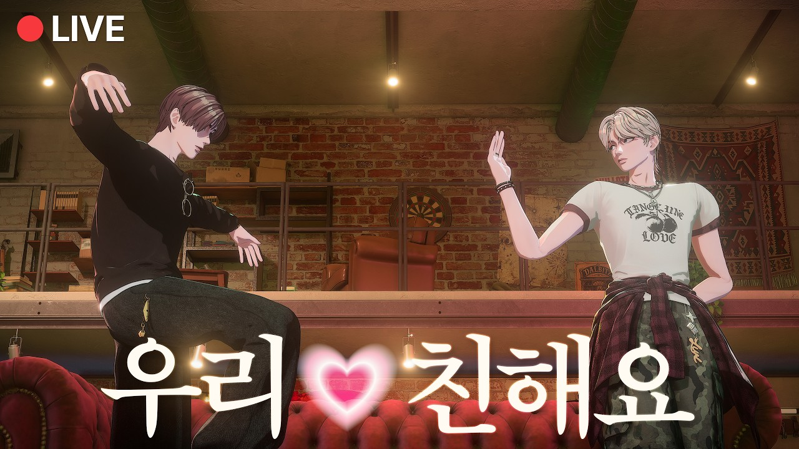

SKINZ分類：Instagram · 直播日期：2025-05-04SKINZ 人氣歌謠舞台後 Voice LiveSKINZ 在 YouTube 觀看原始影片×載入 YouTube 播放器 繁中韓文雙語A−12ptA＋劇院模式繁體中文點播放後，字幕會顯示在這裡韓文 1010速度 0.75×1×1.25×1.5×2×00:00 / --:-- 分享這篇@fLINE𝕏 影片翻譯評分☆☆☆☆☆選擇 1～5 星展開雙語逐字稿 點擊查看完整內容雙語逐字稿雙語韓文繁中 自動跟隨播放文字大小 A−A＋重設字幕偏移（秒） 字幕比聲音早出現時填正數00:00:24네. 안녕하세요.大家好00:00:26>> 안녕하세요.大家好00:00:26>> 안녕하세요.大家好00:00:27>> 조금만 기다려 주세요.請稍等一下00:00:31>> 네. 알겠습니다.好 知道了00:00:39안녕하세요.你好00:00:41안녕.你好00:00:43헬로 가이즈.Hello guys00:00:52조금만요.等一下00:01:03가이 곰방晚上好00:01:11스코시다게 마테크다사이네請稍等一下00:01:23저희 시작할게요.我們開始吧00:01:26안녕하세요 여러분 스킨즈 도빈입니다.大家好 我是 SKINZ 的 Dovin00:01:31저 오늘 두 번째 라이브입니다.今天是第二次直播00:01:34지난 첫 라이브에 함께 해 주신上次第一次直播時 我們對一起參與的00:01:36팬분들에게 약속은 약속을 저희가粉絲們做了一個約定00:01:38드렸거든요. 근데 이제 약속을為了履行約定00:01:40지키려고 저희가 또 라이브를 이렇게所以又開了直播00:01:42켰습니다. 다들 잘 지내셨나요?大家過得好嗎00:01:45>> 잘 지내셨을까요?大家都過得好嗎00:01:48>> 네, 오랜만이죠. 근데 이렇게 시간好久不見 謝謝大家抽出時間00:01:51내서 저희 스킨즈 라이브에 와 주셔서來看我們 SKINZ 的直播00:01:53다들 감사합니다.謝謝大家00:01:55>> 감사합니다.謝謝00:01:57>> 저는 이제 두 번째다 보니까 벌써因為我已經是第二次了00:01:59이렇게 팬분들이랑 인사하는게和粉絲們打招呼00:02:01익숙해졌는데 옆에서 이제 잔뜩已經習慣了 但旁邊有兩位00:02:04긴장하고 있는 저희 멤버들 두 명이非常緊張的成員00:02:06있습니다.00:02:08오늘의 더 레이나 스킨즈의 뉴페이스今天 The Late Night with SKINZ 的兩位新面孔00:02:11두 분 이제 소개부터 부탁드립니다.請先自我介紹00:02:14>> 안녕하세요. 스킨즈에서 메인 보컬大家好 我是 SKINZ 的主唱00:02:17담당하고 있는 다일입니다.Dael00:02:19반갑습니다.很高興見到大家00:02:20>> 우.00:02:21>> 네. 안녕하세요. 스킨즈 서브컬大家好 我是 SKINZ 的副唱00:02:24담당하고 있는 태오입니다.Theo00:02:26>> 안녕하세요.你好00:02:28>> 네. 오늘은 이렇게 다해형 그리고今天有 Dael 哥00:02:31태오 그리고 저 도빈 이렇게 3시Theo 和我 Dovin 三個人00:02:34라이브를 함께 진행하게 되었습니다.一起直播00:02:37이제 팬분들이 이제 형이랑 태오한테粉絲們應該有很多00:02:40이제 궁금한게 조금 많을 거 같아요.想問哥和 Theo 的問題00:02:42한번 뭐 궁금하신 거 있으시면은有什麼好奇的00:02:44편하게 질문해 주시면 됩니다. 많이都可以隨意提問 請大家多多00:02:47부탁드려요.提問00:02:50>> 아, 인기가요 인기가 여러분들이人氣歌謠 看來大家有看00:02:52보셨나 봐요. 대박이었습니다.太棒了00:02:55>> 네.對00:02:56누가 이렇게 영어를 잘하냐고 하시는데有人問是誰英文這麼好00:02:59점입니다.是我00:03:01도빈입니다. 여러분我是 Dovin 各位00:03:05목소리가 말랑말랑하고 너무 귀엽다고有人說聲音很柔軟 很可愛00:03:07하십니다. 감사합니다.謝謝00:03:09>> 감사합니다.謝謝00:03:11>> 네.對00:03:13Can you speakCan you speak00:03:13English 하시는데?Can you speak00:03:16>> 우리 도빈이가 잘해요.我們 Dovin 很會說00:03:21>> 네. 여러분 이제 이렇게 오늘 이렇게各位 今天00:03:24저랑 저 도빈 그리고 다해형 태오有我 Dovin 和 Dael 哥 Theo00:03:27이렇게 셋시 라이브를 함께 하게我們三個一起00:03:28되었습니다.直播00:03:30그래서 오늘 저희 여러분 스킨즈의 첫大家看了我們 SKINZ 的第一個00:03:33음악 방송 무대 인기가요. 보셨나요?音樂節目舞台 人氣歌謠嗎00:03:37>> 네. 저 유튜브에 올라온 거 모니有 我看了 YouTube 上傳的影片00:03:40아니 탱한테 물어본게 아니라 여러분들不是 我不是問 Theo 是問大家00:03:42여러분들한테 물어 여러분들한테 물어본我是問觀眾啦00:03:45>> 긴장 긴장太緊張了00:03:47>> 보셨을까요?大家看了嗎00:03:48>> 네. 오늘 처음이다 보니까. 네.因為今天是第一次00:03:51그래서 이제 저희가 이제 음악 방송這是我們第一次00:03:53무대를 처음으로 해 봤기 때문에이站上音樂節目的舞台00:03:55부분에 대한 이야기를 안 할 수가不能不聊聊00:03:57없어요. 그래서 이제 처음으로 음악這件事 第一次00:03:59방송 출연을 한 소감 이제 대어부터參加音樂節目的感想 先從 Theo00:04:02해 볼까요?開始吧00:04:03>> 음.00:04:05저 사실 멤버들은 알겠지만 제가 또成員們都知道00:04:08스킨즈에서 유명한 개복치잖아요.我是 SKINZ 出了名的翻車魚00:04:11>> 멘탈이 조금 약한데心理承受力比較弱00:04:13>> 첫 음방무대 정말 떨렸는데 그래도第一次音樂節目舞台很緊張 不過00:04:15실수 없이 해낸 거 같아서 나름 작은好像沒有失誤地完成了00:04:18뿌듯함을 가지고 있습니다.所以有點小小的成就感00:04:19>> 어, 그죠. 그렇죠. 다일령은요.對 Dael 哥呢00:04:22>> 저도 사실 두 번째라고 하긴 하지만雖然說是第二次站上舞台00:04:25저희가 또 무대 오늘 음악 방송은但今天是第一次00:04:28처음이어서 항상 그 처음 같은音樂節目 所以每次都像第一次00:04:30설렘으로 하고 있는데 사실 지금이一樣期待 其實現在00:04:33순간도 못지 않게 너무 떨려서 사실也一樣緊張00:04:37아까 그 감정이 거의 기억이 안緊張到幾乎想不起剛才的心情00:04:38날만큼 떨리는 중이에요, 지금도.現在也很緊張00:04:40>> 아, 그죠. 그죠.對00:04:41>> 네.對00:04:42>> 그 여러분들도 이제 유튜브에서大家在 YouTube 應該也看到了00:04:44보셨겠지만 저희가 엔딩 요정을 모두가我們所有人都當了結尾妖精00:04:47했었잖아요.00:04:48>> 그죠?對吧00:04:49>> 아, 그렇죠. 네. 그래서 저희對 那我們成員00:04:52멤버들이 보기에는 베스트 엔딩 요정各自選出一位00:04:54각자 한 명씩 뽑아 볼까요? 아,最佳結尾妖精吧00:04:57저는 근데我的話00:04:59저도 앞을 보느라고 보지 못했지만雖然我當時看著前方 沒看到00:05:02>> 네. 네.對00:05:03>> 그 우리 재훈이가 저한테 하기 전부터但 Jaon 在開始前就一直跟我說00:05:07엄청 얘기했어요. 저 하트할 거예요.我要比愛心00:05:09하트할 거예요.我要比愛心00:05:10>> 만약에 그걸 만약에 했다면 지켰다면如果他有照著做00:05:13>> 저는 당연 재훈이가 제일 귀엽지那我當然覺得 Jaon 最可愛00:05:15않나?00:05:16>> 아, 재훈이Jaon 啊00:05:17>> 네. 아 못 보셔 못 보시는 거죠?你沒看到吧00:05:20저 제 거 하늘 아파.忙著做自己的00:05:21>> 아 네네. 태우는요?好 Theo 呢00:05:24혹시 저를 뽑아도 될까?可以選自己嗎00:05:26>> 아, 아니不行00:05:28본인은 제외하겠습니다.不能選自己00:05:29>> 아, 네. 그러면 저는 이제 엔딩好 那我覺得00:05:33포즈도 엔딩 포즈인데不只是結尾動作00:05:35>> 무대 중간에 유리가 윙크를 하는表演中間 Yull 有眨眼的片段00:05:39장면이 있더라고요. 또 저희 모르게還瞞著我們00:05:41또 윙크를 또偷偷眨眼00:05:42>> 했더라고요. 그 부분이 가장 귀엽고我覺得那個部分最可愛00:05:45그랬던 거 같습니다.00:05:46>> 야, 좋습니다.很好00:05:49그 저 같은 경우에는我的話00:05:51이랑이가 제일 뭔가 제 스타일이었던Ilang 最符合我的喜好00:05:54거 같아요. 엔딩 요정. 저도 이제結尾妖精 我也00:05:56본인을 제외하고.排除自己00:05:59>> 네. 여러분들은 저희 오늘 인기가요各位 我們今天在人氣歌謠的00:06:02스캔지 무대 어떠셨나요?SKINZ 舞台如何呢00:06:03>> 맞아. 궁금해요.對 很好奇00:06:06>> 어,00:06:07유리 유리 꼽으시는 분들이 역시果然很多人選 Yull00:06:10>> 네.對00:06:12>> 눈이 또 예쁜데 윙크까지 해 가지고.眼睛本來就漂亮 還眨眼00:06:15>> 야, 그죠. 그죠.對啊00:06:19유리 오늘 너무 깜찍했다고. 맞아요.有人說 Yull 今天很可愛 沒錯00:06:21음. 유리가 보면은 귀엽잖아요.Yull 本來就很可愛00:06:26홍콩 팬이에요. 오늘 라이브我是香港粉絲 今天直播00:06:27파이팅하세요. 아, 감사합니다.加油 謝謝00:06:29감사합니다. 한글로 이렇게 감사해요.謝謝 還用韓文留言 謝謝00:06:34>> 네. 저도 이제 많은 분들이 무대를有很多人看了我們的表演00:06:38봐 주셨잖아요.00:06:39>> 네. 그래 가지고 이게 이렇게 응원을收到大家這樣的支持00:06:42해 주시니까 앞으로도 이제 저희가 또讓我們覺得 以後也要用00:06:45좋은 곡이랑 좋은 이제 퍼포먼스好歌曲 好的表演00:06:48그리고 좋은 무대로以及好的舞台00:06:50이제 보답을 해 드려야겠다.來回報大家00:06:51>> 맞아. 진짜 큰 동기 부여 다짐을對 給了我們很大的動力00:06:54하게 된 거 같습니다. 네.也下定了決心00:06:57>> 목소리 처음 듣는다고. 네. 자,有人說第一次聽到聲音00:07:00그러면 저희 그 다음 순서가 뭐죠?接下來是什麼環節00:07:06뭐죠? 다령죠? 저희 아 저희 그Dael 哥 是什麼呢00:07:09제가 진짜 하고 싶었던게 저번 제가有件事我很想做00:07:12저번 첫 라이브 때 제가 없었잖아요.上次第一次直播我不在嘛00:07:15>> 아 그죠. 저도 당연히 보면서對 我看著的時候00:07:17느꼈던게就覺得00:07:18그 팬분들께서 질문해 주시는 거 듣고聽著粉絲們的問題00:07:23나였으면 어떻게 대답했을까 그런如果是我會怎麼回答00:07:25생각도 하고也有這樣想00:07:26>> 그래서 팬분들이 미리 직접 남겨 주신所以來回答粉絲們00:07:30댓글 질문에 답변을 드리는 시간事先留下的提問00:07:32>> 아 무물隨意問00:07:33>> 그런네 그런 시간 가져오면 너무 좋을有這樣的時間00:07:34것 같습니다.應該很好00:07:35>> 무물 타임隨意問時間00:07:37>> 무물 그러면 한번 해 보겠습니다那就開始隨意問吧00:07:38여러분 아 근데 이제 팬분들이 도빈各位 不過粉絲們說00:07:41씨 말고 두 분 목소리가 굉장히 애기除了 Dovin 以外 另外兩位的聲音00:07:43같다고 하세요. 아, 진짜요?很像小孩 是嗎00:07:47감사합니다.謝謝00:07:49너무 긴장해서 더 그런가 봐요.可能太緊張了 才更像吧00:07:51>> 네.對00:07:53다 님 목소리가 너무 곱네요.Dael 的聲音很柔美00:07:55감사합니다.謝謝00:07:57>> 무대보다 떨리는 거 같은데.感覺比站上舞台還緊張00:07:59>> 바로 밑에 오늘 또 제로콜라下面有人問今天又喝了00:08:01같으셨냐고?零卡可樂嗎00:08:02>> 아니,00:08:05예. 아, 뭐00:08:08>> 제로콜라 님 대답해 주세요.零卡可樂先生 請回答00:08:09제로콜라지.零卡可樂00:08:11>> 아, 네. 아, 당연히 당연히. 네.當然00:08:13점심은 당연히 마시고 왔습니다.午餐當然有喝00:08:15>> 아,00:08:18>> 네. 바일 님 목소리 너무 좋다.Dael 的聲音很好聽00:08:21>> 감사합니다.謝謝00:08:23>> 진짜00:08:25근데 확실히 목소리가 좋긴 해요.不過聲音確實很好聽00:08:28다형도 그렇고 태오도 그렇고 목소리가Dael 哥和 Theo 都是00:08:30진짜 좋죠.聲音很好聽00:08:31>> 저 부끄러운 말이 급격히 없어져一害羞就突然沒話了00:08:33가지고00:08:33>> 아, 네.00:08:34>> 부끄러워요.好害羞00:08:35>> 조금만 더 긴장을 풀어 보도록我會試著再放鬆一點00:08:36하겠습니다.00:08:37>> 네. 알겠습니다.好 知道了00:08:40>> 네.對00:08:41무물타물타.隨意問時間00:08:42>> 네. 그럼 저희가 무물을 한번 해那我們開始隨意問吧00:08:43볼까요?00:08:44>> 네.好00:08:45>> 좋습니다.好00:08:46>> 자, 무물 빠밤隨意問00:08:48>> 빠밤00:08:50>> 야식 추천해 주세요.請推薦宵夜00:08:52>> 아, 야식 추천.推薦宵夜00:08:54저희 또 야식하면 저 확실히說到宵夜 我們00:08:57>> 요리를 잘하시니까 우리你很會做菜嘛00:08:59>> 아, 제가00:09:00>> 저 요리하고 막 하는 걸 좋아해我很喜歡做菜00:09:02가지고00:09:03>> 응.對00:09:04>> 막 음식 얘기 이런 거 하면은 재밌게聊食物這些話題00:09:06잘 하는 편이에요.通常都能聊得很開心00:09:07>> 맞아. 자일령이 진짜 요리를 잘해요.對 Dael 哥很會做菜00:09:10>> 다 드셔 보셨습니까? 네.大家都吃過嗎00:09:13감사합니다.謝謝00:09:13>> 네. 벌써 치미 고이네요.謝謝00:09:17>> 근데 좀 그런 거 있잖아요. 그 또不過有這種考量嘛00:09:19저희 같은 경우에는像我們00:09:20>> 응.對00:09:21>> 야식 물론 뭐 안 좋은게 많지만雖然宵夜常常不太健康00:09:25>> 단백질 함량 되게 중요하게蛋白質含量很重要00:09:27생각하시네요.00:09:27>> 아, 주 다들 운동을 그래도 조금씩00:09:29하니까. 그래서 치킨 같은 거所以像炸雞00:09:34>> 아니 운동 아니 운동이랑 운동이랑運動和00:09:37치킨은 너무 매치가 안 되는데炸雞也太不搭了吧00:09:39>> 그래서 튀기는게 좀 부담스럽다所以如果覺得油炸的負擔太大00:09:41그러면은 또 이제 찜닭 같은 메뉴也可以吃韓式燉雞00:09:43>> 아00:09:45>> 찜닭 좋은 거 같습니다.韓式燉雞不錯00:09:46>> 찜닭 좋죠.很好吃00:09:47>> 한 발짝 혀 그 타협을 하는 메뉴로算是退一步妥協的選項00:09:50>> 네對00:09:50>> 사실 찜닭 너무 맛있어서對00:09:52>> 맞아요. 다엘형 무슨 요리가 제일對 有人問 Dael 哥最拿手的料理00:09:54자신이 있냐고. 아, 저는 좀 한식을我很喜歡韓式料理00:09:57되게 좋아하고 잘 하는 편이에요.也滿擅長的00:09:59>> 한식. 제일 자신 있는 요리가 뭔가韓式料理 有最拿手的菜嗎00:10:02있을까요?00:10:02>> 한식. 아, 김치찌개.00:10:05>> 우와.00:10:08저도 저도 근데 다엘 형이 해 준我也吃過 Dael 哥煮的飯00:10:11밥을 먹어 봤는데 진짜 맛있어很好吃00:10:12가지고.00:10:13>> 네. 근데 제가 그때 충격을 받았던게那時候讓我驚訝的是00:10:16먹었는데 너무 맛있는 거예요. 근데吃起來已經很好吃了00:10:20본인은 아 원래 이것보다 더 잘하는데但他卻說我平常做得更好00:10:23오늘 잘 안 됐다.今天沒做好00:10:25>> 아00:10:26>> 평소에는 얼마나 맛있는지.那平常到底有多好吃00:10:28>> 음00:10:29>> 근데 그거 아시죠? 김치찌개는 김치但你們知道吧 泡菜鍋只要00:10:31맛있으면은泡菜好吃00:10:32>> 네對00:10:33>> 그간 맛있잖아요.煮出來就好吃00:10:34>> 아 그죠.對00:10:35>> 네.對00:10:36그래서 제가 할머니보다所以我比奶奶00:10:39>> 그래서 다형의 픽은所以 Dael 哥的選擇是00:10:43찜딱.韓式燉雞00:10:43>> 네.韓式燉雞00:10:44>> 치킨과 찜닭.炸雞和韓式燉雞00:10:45>> 치킨 찜딱. 좋습니다. 그럼 태오는好 那 Theo00:10:47한번 얘기해 볼까요? 근데 이거 조금來說說看 這個可能00:10:50야유를들을 수도 있는데會被噓00:10:53>> 음00:10:53>> 제가 야식을 야식을 잘 안 먹고00:10:56>> 아이고00:10:56>> 밤에 배고프면 이제 아몬드나 땅콩 몇00:10:59달 먹거나 바나다 먹거나 해가지고或是香蕉00:11:05>> 아 그니까 아 그까 보 본인이 야식을不是在問你自己00:11:08뭘 먹느냐가 아니라 야식 추천을 해吃什麼宵夜 是要你推薦宵夜00:11:10주세요. 아까도 여러분들께 물은 걸剛剛也是 問觀眾的問題00:11:14질문하고你就回答了00:11:16>> 뭐 바나나 뭐 이런 거 추천 드릴 수可以推薦香蕉之類的00:11:18있을 것 같아.00:11:19>> 아니 여기 새어 탈락이래. 어有人說 Theo 淘汰00:11:22>> 죄송합니다.對不起00:11:24>> 저도 똑같이 생각해요.我也這麼想00:11:29>> 바나나. 어 뭐 바나나도 좋긴 하죠.香蕉也不錯啦00:11:32속도 편하고 밤에 자기에胃比較舒服 晚上睡覺00:11:35>> 좋습니다.不錯00:11:35>> 그러면 도빈 씨不錯00:11:37>> 네또好00:11:38>> 메뉴를 하나 추천해 주신다면要推薦一道的話00:11:40>> 저는我00:11:43저는 근데 그 불고기를 좀 좋아하는我滿喜歡韓式烤肉00:11:47편입니다.00:11:48>> 어 불고기네이韓式烤肉00:11:49>> 야식 메뉴하는 조금 동떨어졌다고可能覺得跟宵夜00:11:51생각하실 수 있어요.沒什麼關係00:11:53>> 근데不過00:11:54>> 은근히 그 야식일 때 출출할 때晚上肚子餓的時候00:11:56불고기가 굉장히 맛있습니다.韓式烤肉意外地很好吃00:11:58>> 어 그리고 또 단백질까? 아 그而且還有蛋白質嗎00:12:00맞아요 맞아요.對00:12:01>> 빼놓을 수 없는 단백질不能少的蛋白質00:12:03>> 진짜 높습니다.含量很高00:12:04>> 아 제로콜라零卡可樂00:12:05>> 아 제로 제로콜라는零卡可樂00:12:07>> 불고기 윗 제로콜라韓式烤肉配零卡可樂00:12:09>> 그렇긴 해요.네是沒錯00:12:12>> 이렇게 저희가 야식 추천을 드렸고요.以上是我們推薦的宵夜00:12:15그다음 다음 질문 넘어가 보겠습니다.接著看下一題00:12:19영앤우드 작사하면서 멤버끼리 재밌었던寫 Young and Loud 歌詞時 成員之間00:12:23에피소드. 아, 이건有什麼趣事 這個00:12:26작사와는 좀 거리가 있을 수 있는데可能跟作詞有點無關00:12:30그 사실 저희가 작업을 하거나 뭐其實我們製作或00:12:32작사를 하거나 이렇게 작업을 할 일이作詞 有需要一起工作時00:12:34있으면00:12:35>> 네. 도빈 작업실에最常聚在 Dovin 的工作室00:12:37가장 많이 모이잖아요.00:12:38>> 맞아요.對00:12:39>> 근데 저는 이거 처음 말하는 건데但我第一次說這個00:12:42>> 그 방 구조가那個房間的格局00:12:44왜 그 창문 반대쪽에 모니터를為什麼把螢幕放在窗戶對面00:12:47두셨는지 왜 너무因為太00:12:48>> 눈이 부셔요.刺眼了00:12:49>> 눈이 부셔 가지고太刺眼了00:12:50>> 눈이 아플 지경이에요.眼睛都快痛了00:12:52>> 저희가 이러다 시력을 잃겠다. 이런我們抱怨過很多次00:12:53얘기를 항의를 좀 많이 했어요.說這樣下去會失明00:12:56>> 음.00:12:57>> 왜 배치를 그렇게 하셨을까?為什麼要那樣擺呢00:12:59아니 아니 근데 그게 반대쪽으로不是 如果反過來00:13:02하면은 오히려 모니터에 모니터가 안反而看不到螢幕00:13:05보여 그러면.00:13:06>> 음00:13:07>> 그럼 커트는 혹시 언제 다시那窗簾打算什麼時候裝00:13:09생각이신지00:13:11>> 가사를 조심스럽게小心翼翼地00:13:12>> 시력을 포기하신님你放棄視力了嗎00:13:15커튼 커튼은 제가 그래도 안 그래도窗簾 我本來也有想00:13:17저희가 최근 이게 집들이 하고 했는데最近不是辦了入厝聚會嗎00:13:21아무도 이제 커튼 선물을 안 해 주셔但沒人送我窗簾00:13:22가지고00:13:23>> 아 우리가 사 줄 때까지 안 살他說要等我們買給他才買00:13:26거래.00:13:28아, 네. 뭐00:13:29>> 조금 어려운 형이네요.有點難搞的哥哥00:13:30>> 아, 그래도 여러분들이 이렇게 말씀을不過既然大家都這麼說00:13:33하시니까 뭐 조만간에 커튼은 생각해那我近期會考慮00:13:35보도록 하겠습니다.裝窗簾00:13:37>> 음.00:13:37>> 감사합니다.00:13:38>> 네.對00:13:39아,00:13:41지금 봐 보세요. 지금이 불만하기你們看 有觀眾說00:13:43시간이 아니냐고 여러분들이現在不是抱怨時間吧00:13:45>> 작사하니까 생각이 나 가지고.提到作詞就想起來了00:13:47>> 네. 그리고 제가 이제 커튼을 좀 잘而且我本來就不太00:13:51안 달기도 합니다. 이제 저는 이제裝窗簾00:13:53그 보통 그 바깥에 실제 느껴지는 걸平常比較喜歡感受外面00:13:58좋아하긴 해서真實的環境00:13:59>> 아 자연인 느낌으로像自然人一樣00:14:01>> 예. 약간 눈 떴을 때 햇빛이 비추고對 我喜歡睜開眼就有陽光00:14:03약간 이런 걸 좋아해 가지고照進來的感覺00:14:05>> 그렇습니다.就是這樣00:14:06>> 네.對00:14:07>> 네. 그럼 다음 질문 한번가 볼까요?那看下一題吧00:14:10>> 좋아요.好00:14:11>> 무대 오르기 전에 긴장이 되나요?上台前會緊張嗎00:14:14혹시 긴장을 푸는 팁이 있다면?有什麼放鬆的小技巧00:14:19그럼 이거는 태우부터 대답해 볼까요?這題先讓 Theo 回答吧00:14:22>> 음. 저는 긴장을 되게 많이 하는我很容易緊張00:14:25편이어서00:14:25>> 아,00:14:26>> 네. 자타 개복히.大家公認的翻車魚00:14:27>> 개복치죠.是翻車魚00:14:28>> 네. 긴장 풀 때는 확실히 저는 혼자要放鬆的時候 我會自己00:14:32조용히安靜地待著00:14:32>> 와우.安靜地待著00:14:33>> 노이즈 캔슬링 헤드폰 끼고戴上降噪耳機00:14:35>> 음.00:14:36>> 구석에 있는 거 보셨지 않나요?你們有看過我待在角落吧00:14:37>> 맞아요. 아무리 불러도 대답이對 怎麼叫都00:14:39없더라고. 아,沒反應00:14:39>> 죄송합니다. 부르셨었나요?沒反應00:14:41>> 남들이 보면 좀 오해할 수 있 우리가別人看了可能會誤會00:14:43뭐 왕따시키는 아예以為我們排擠你00:14:45>> 그런 느낌. 아, 좀 센치해지는 걸那種感覺 我喜歡沉浸在00:14:47좋아하는感性的情緒裡00:14:48>> 그죠? 맞아요. 맞아요. 네. 기분이對 我們還以為00:14:50안 좋나 이렇게 했는데 이게 긴장을你是不是心情不好 原來這是00:14:52푸는 방법이라고 합니다.你放鬆的方式00:14:54>> 여러분들께 무대를 더 잘 보여 드리기為了讓大家看到更好的舞台00:14:56위해서.00:14:57>> 아, 좋죠. 그럼 다엘 형은 뭐가很好 那 Dael 哥呢00:15:00있을까요?00:15:01>> 아, 저도 긴장을 좀 많이 하는我也很容易緊張00:15:03편인데00:15:04>> 음.00:15:05>> 그 다들 노래하니까 아시잖아요. 이게大家都有唱歌所以知道00:15:08몸에 힘이 좀 빠져야 노래가 더 잘身體放鬆才能唱得00:15:11되니까.更好00:15:11>> 그죠? 그렇죠. 저는 운동 운동을 좀更好00:15:14하는 편이에요. 그래서 몸에 힘을 좀運動 讓身體的力氣00:15:16다 빼 놓는 편이에요.都放掉00:15:17>> 음. 음. 근데 대기실에서 막 이렇게但在待機室00:15:20넓게 쓸 순 없지만맞沒辦法用太多空間00:15:21>> 뭐00:15:22>> 뭐 팔고 표기를 좀 한다거나所以會做伏地挺身之類的00:15:25>> 근데 그러면 진짜 다음에 한번 해你們下次也試試00:15:27보세요.00:15:28>> 노래가 조금 더 잘되고會唱得比較好00:15:29>> 그리고 또 이제 팬분들에게 이제 벌이也能讓粉絲看到00:15:33펌핑이 된充血膨脹的00:15:34>> 네對00:15:35>> 몸을 보여 드릴 수도 있고肌肉00:15:35>> 그러고 야식으로 찜닭까지肌肉00:15:38>> 안 돼 안 돼 그러면 커지기만 하는不行 那不是只會越來越壯嗎00:15:41거 아닌가요? 네.네 네. 네. 그런對00:15:43느낌입니다.差不多就是這樣00:15:45>> 어, 이제 질문이 올라왔는데요.有新問題了00:15:48연장전으로 목은 어떻게 푸느냐고 질문延伸提問 怎麼暖嗓00:15:51주셨어요. 목 푸는 방법.暖嗓的方法00:15:52>> 아, 목 푸는 방법.暖嗓的方法00:15:54>> 네.對00:15:54>> 저는對00:15:57아, 저는 그것도 몸에 힘이 빠지면은那個也是 身體放鬆就會比較好00:15:59좋아서 같은 방법을 사용하긴 해요.所以用一樣的方法00:16:02>> 아, 운동. 네. 네. 운동을運動00:16:03하신다.會運動00:16:05>> 여러분들도 다음에 운동하시고 나서大家下次運動完00:16:08>> 한번 이렇게 흥을거려 보시면也可以試著哼個歌00:16:10>> 좀 다름을 느낄 수 있을 거예요.應該會感受到差異00:16:13>> 예. 근데 저도 저도 이게 공감을我也很有同感00:16:15하는게 저도 뭐 녹음하거나 할 때我錄音的時候00:16:17>> 이제 충을 하고 가면은 훨씬 녹음이先運動再去00:16:20잘 되더라고. 예. 네. 진짜錄起來順很多00:16:22>> 이제 목이 잠긴게 조금 이렇게 풀려原本卡住的嗓子00:16:25가지고比較打開了00:16:25>> 꿀팁이에요. 꿀팁.比較打開了00:16:26>> 네.對00:16:29>> 네. 그러면 무슨 운동 좋아하시는지有人問00:16:31질문이 올라왔거든요.喜歡什麼運動00:16:33>> 아, 저는 저는 그 웨이트 트레이닝我喜歡重量訓練00:16:37>> 아, 웨이트重訓00:16:39>> 웨이트 잘하시죠?你很會重訓吧00:16:42>> 예, 진짜 잘하세요.對 很厲害00:16:43>> 아, 활동적인 것도 좋아하는데 그我也喜歡活動量大的運動 不過00:16:47이러면 좀 그렇습니다. 고립어 이거這樣說有點 那種孤立訓練00:16:49어,00:16:50>> 그래서 이렇게 정 이렇게 천천히這樣穩穩地 慢慢地00:16:52이렇게 하는게 좋아요.做動作的感覺00:16:53>> 정문가. 예, 전문가專業人士00:16:54>> 아직 많이 부족하지만 좋아합니다.還有很多不足 但我喜歡00:16:56>> 태우는 어떤 운동 좋아해요?Theo 喜歡什麼運動00:16:58전 이제 뭐 웨이트보다는 좀 더比起重訓 我喜歡00:17:01역동적인 크로스핏이나更有動態感的 CrossFit00:17:03>> 어 네00:17:04>> 아니면 이제 액티비티 같은 운동或是戶外活動類的運動00:17:06좋아합니다.00:17:07>> 오 액티비티 운동戶外運動00:17:08>> 네다00:17:11>> 지금 말하고 있는 건現在說話的是00:17:13>> 인생은 고리비치人生就是孤立訓練00:17:14>> 새우고요.네 네. 그러면은 태오는Theo 那 Theo 喜歡00:17:17액티비티, 크로스핏, 그 다엘형은戶外活動和 CrossFit Dael 哥喜歡00:17:20>> 네,00:17:21>> 웨이트,重訓00:17:21>> 그리고 우리 도빈 씨는重訓00:17:22>> 도빈형Dovin 哥00:17:24>> 저는我00:17:27운동을運動00:17:29>> 크게 즐겨하시지 않을不太喜歡吧00:17:30>> 즐기진 않습니다.不太喜歡00:17:31>> 약간 의무로 하시는比較像例行公事00:17:33>> 숨쉬기 운동을做呼吸運動00:17:34>> 네,對00:17:35>> 숨쉬기 운동을 하거든요. 이게我做呼吸運動00:17:37여러분들이 아실지 모르겠지만이 사람이不知道大家知不知道 人有00:17:40기초 대사량이라는게基礎代謝00:17:41가만히 있어도 칼로리가 빠져就算不動 也會消耗熱量00:17:43나가거든요. 운동을 하는 거예요.所以也是運動00:17:45혹시 말할 때 누군지 말하고 시작해可以先說自己是誰00:17:47줄 수 있어요?再開口嗎00:17:47>> 아, 네. 도빈입니다. 도빈은 숨쉬기再開口嗎00:17:51운동.運動00:17:51>> 음.運動00:17:52>> 다엘은 웨이트 트레이닝.Dael 做重量訓練00:17:54>> 네.對00:17:55>> 태우는Theo00:17:55>> 태는Theo00:17:56>> 액티비티빛.喜歡戶外活動00:17:57>> 크로스핏 같은 운동.像 CrossFit 這類運動00:17:59>> 조금 더 역동적인更有動態感的00:18:01>> 네.對00:18:04이게 가만히 있어도 숨마 쉬도 이제因為坐著不動 光是呼吸00:18:05칼로리가 소모가 되기 때문에就會消耗熱量00:18:07운동이라고 볼 수 있죠. 네.所以也可以算是運動00:18:09>> 자, 그럼 다음 질문으로 넘어가接著下一題00:18:10보겠습니다.00:18:12가장 행복하다고 느낄 때가覺得最幸福的時刻00:18:13언제인가요?是什麼時候00:18:15아, 저는 저부터 다엘부터 얘기해야從我 Dael 先說嗎00:18:18되나요?00:18:18>> 네. 다엘 얘기해 주세요.00:18:20>> 저는我00:18:21그 여러분과 함께 지금이就是現在跟大家在一起00:18:24>> 죄송합니다.不好意思00:18:26>> 다시 한번 말씀 아, 제대로 못請再說一次00:18:28들으셨을 거 같아서 다시 운기해서怕你們沒聽清楚 所以我鼓起勇氣00:18:30말하긴 한 건데再說一次00:18:32>> 지금이 순간就是此刻00:18:33>> 또 이렇게能這樣00:18:34>> 소통을 하고交流00:18:36>> 여러분과 이렇게 얘기를 하는和大家聊天00:18:38>> 지금이 순간이就是這一刻00:18:39>> 여러분들과 함께하 지금跟大家一起的現在00:18:40>> 저는 매번 갱신해요.每次都會刷新紀錄00:18:42>> 네. 앞으로도 이제 계속 갱신이 되고以後也會繼續刷新00:18:45>> 다일이 혹시 대본 있어요?Dael 你有講稿嗎00:18:51>> 아 다일 달라. 다일 혹시 대본等一下 Dael 你有講稿嗎00:18:54있나요?00:18:55>> 나 그냥.我只是00:18:57>> 네. 아 그래도 이제 팬분들이不過這表示00:18:58그만큼네你有多重視粉絲00:19:00>> 생각하신다. 네네. 맞아요.對00:19:01>> 네. 좋습니다.很好00:19:02>> 저 또한 저 태어 또한我 Theo 也是00:19:04>> 네.對00:19:05>> 물론 지금이 순간이 가장 좋지만當然現在是最幸福的時刻00:19:08>> 네. 제가 물을 너무 좋아해서不過我很喜歡水 所以衝浪00:19:10서핑하거나00:19:11>> 아,00:19:12>> 네. 이제 수영하거나 할 때 가장或游泳的時候00:19:14행복하다고 느끼는 거 같습니다.會覺得最幸福00:19:16>> 액티비티를 좋아한다고 했습니다. 그런你剛說喜歡戶外活動00:19:18걸 할 때 약간 자유로움을 느끼는做這些的時候會覺得自由嗎00:19:20건가요?00:19:21>> 어, 그런 거 같아요. 야외好像是 去戶外00:19:23수영장이나 이런 바다 갔을 때 햇빛을泳池或海邊00:19:26즐기면서享受陽光00:19:27>> 그 행복하다.就覺得幸福00:19:28>> 근데 최근에 진짜 태오가 그 얘기最近 Theo 真的常說00:19:30많이 했어요. 날씨가 요즘 매일 너무最近每天天氣都很好00:19:33좋아서00:19:33>> 응.00:19:34그래서 햇볕이 좋으니까 서핑하고陽光很好 所以想去衝浪00:19:36싶다.00:19:37>> 어 서핑衝浪00:19:38>> 되게 엄청 고급힘이 가지고 있구나.你有個很高級的興趣呢00:19:40나 아무도 저한테 배우려고 하질可是都沒人想跟我學00:19:42않으셔서00:19:43>> 저는 이제 운동을 항상 하고 있기因為我一直在運動00:19:45때문에00:19:46>> 아 숨쉬기 운동네呼吸運動00:19:48>> 저는 가장 행복하다고 느낄 때가 사실要說最幸福的時刻00:19:53없는 거 같아요.好像沒有00:19:55>> 안 행복하세요? 아, 그니까 안你不幸福嗎00:19:56행복하다기보다不是不幸福00:19:57>> 그니까 약간 제가 삶의 삶을 대하는而是我對待生活的00:20:00방식이나 이런 거 자체가 조금方式00:20:03>> 정말 사소한 거에도 행복하고 뭔가連很小的事都能讓我幸福00:20:06>> 아,00:20:06>> 언제나 행복하다가 맞는 거 같아요.00:20:08>> 평소에도 행복하다.平常也很幸福00:20:09>> 평소에도 행복하게 살려고 하고 있고.平常也努力幸福地生活00:20:11>> 네.對00:20:12>> 그래서 뭔가 가장 행복하다고 하나를所以沒辦法只選一個00:20:15꼽을 수가最幸福的時刻00:20:16>> 없겠어요, 저는.我沒辦法00:20:18>> 평소에平常就00:20:18>> 좀 멋있다.平常就00:20:19>> 아이, 감사합니다.謝謝00:20:23네.對00:20:26그러면은 저희 다음 질문 넘어가那我們看下一題吧00:20:29볼까요? 도빈아, 난 너 때문에 늘Dovin 我因為你一直很幸福00:20:31행복해요. 감사합니다. 다음 질문謝謝 下一題00:20:33넘어 보겠습니다.00:20:35멤버들이 가장 좋아하는 계절 알려請告訴我們00:20:37주세요.成員最喜歡的季節00:20:39이거는 태오부터 대답해 볼까요?先從 Theo 回答吧00:20:41>> 네. 저 태오는 아무래도 여름. 아까我 Theo 當然是夏天00:20:44서핑 좋아한다고.剛剛說喜歡衝浪00:20:45>> 아, 아,00:20:46>> 여름.夏天00:20:47>> 네.對00:20:48>> 여름은 덥지 않아요, 근데.不過夏天不會太熱嗎00:20:51근데00:20:52차라리 더운게 겨울은 옷이 너무我寧願熱一點 冬天衣服太重00:20:54무겁고00:20:55>> 음00:20:56>> 또 여름에 즐길 수 있는 그런而且夏天可以享受的00:20:58액티위티들이 많아서 좋아합니다.戶外活動很多 所以喜歡00:21:00>> 어00:21:00>> 크로스핏을 하는데 옷이 무겁다.00:21:03>> 어00:21:04>> 겨울에는 겨울에는因為冬天00:21:06>> 엄청 두껍게 입어서穿得很厚00:21:07>> 좋습니다. 바열형은요?好 Dael 哥呢00:21:10>> 아 저는 또 공교롭게도 우리 태우랑很巧 我剛好跟 Theo00:21:13완전 반대인데完全相反00:21:15>> 겨울을 제 너무 좋아해요.我最喜歡冬天00:21:16>> 어 겨울 남자.冬天的男人00:21:18>> 네. 아 그 살짝 살짝 외로워지는 그那種有點孤單00:21:21쓸쓸한 느낌이 너무 좋기도 하고寂寞的感覺很好00:21:23>> 오00:21:24>> 저는 막 그 계절 향기而且季節的氣味00:21:27>> 맞는 거를 너무 사계절 모두四季的氣味我都00:21:29좋아하는데很喜歡聞00:21:31>> 겨울에 그 좀 차가운 공기가 너무尤其冬天冰冷的空氣00:21:34좋아서我很喜歡00:21:35>> 음네00:21:36>> 좋아요.很喜歡00:21:37>> 겨울 선네 말씀하세요.冬天 請繼續00:21:40>> 그 좀 추우면 좀 애뜻하잖아요.冷一點會有種眷戀的感覺嘛00:21:42>> 네對00:21:43>> 그런 감정이 또那種情緒00:21:44>> 너무 좋아요.我也很喜歡00:21:46>> 귀가 너무 아프지 않나요? 그 추울但天冷時 耳朵不會00:21:48때很痛嗎00:21:49>> 아 근데 아픈 건 싫은데네我不喜歡痛00:21:52>> 코 끝이나 귀가 너무 아프던데鼻尖和耳朵會很痛耶00:21:53>> 그 실이 실이면 뭔가 그 좀那種凍得發疼的感覺00:21:56센치해지고 막 좀 그런 거 있잖아요.會讓人變感性00:21:58그게 좀 좋은 거 같아요.我喜歡那種感覺00:21:59>> 음. 그러네요. 고독 고독한 거原來如此 喜歡孤獨00:22:02좋아하고 고립하는 고립 좋아하고也喜歡孤立訓練00:22:07>> 이렇게 또 연결고리가又連起來了00:22:09>> 네.對00:22:11저 같은 경우에는我的話00:22:13가을 가을이 좋아요.喜歡秋天00:22:15>> 가을이요?秋天嗎00:22:16>> 네.對00:22:17가을이 굉장히 좋은 거 같습니다.我覺得秋天很好00:22:20>> 아, 근데 좀 잘 어울리는 거感覺滿適合00:22:21같아요. 도빈 실험.Dovin 的00:22:22>> 아, 정말요?真的嗎00:22:23>> 맞아.對00:22:24>> 예. 저는 여름도 그니까 너무 덥 더夏天 如果太熱00:22:27더운 것도 너무 더워도 좀 밖에就不想00:22:29나가기 싫고 너무 추워도 밖에 나가기出門 太冷也不想00:22:31싫잖아요. 근데 이제 가을은 좀 밖에出門 但秋天00:22:35나갈 수 있는比較能出門00:22:36>> 음.00:22:37>> 나가기 쉬운.比較容易出門00:22:38>> 그럼 봄은 왜?那為什麼不是春天00:22:39>> 봄은 그 제가 알러지가 있진 않은데春天 我雖然沒有過敏00:22:43>> 음. 그00:22:44>> 아 제 체기를 좀 많이 해요.但會一直打噴嚏00:22:47>> 네.對00:22:48>> 아00:22:51그래요?是嗎00:22:52>> 신기한 이유네요. 알러지가 없는데.好特別的理由 沒過敏卻打噴嚏00:22:54>> 아 가을이 옷입기에도 좋고秋天也很適合穿搭00:22:57>> 멋 멋 내기가 너무 좋 거 같아요.很適合打扮00:22:58>> 맞아요.對00:22:59>> 아 맞아요. 맞아요.對00:23:01>> 그렇습니다. 자 그럼 다음 질문就是這樣 那下一題00:23:03한번가 볼까요? 아 비행기 이용할 때搭飛機時的00:23:08필수템必備品00:23:09>> 아00:23:09>> 각자의 필수템은 뭔가요?00:23:11>> 진짜 중요하죠.很重要00:23:13다일령 먼저 한번先從 Dael 哥00:23:15>> 아 저는我00:23:17>> 네對00:23:18>> 아니 아00:23:19>> 아니 그걸 우린 알러지라고 부르기로我們把那種情況叫過敏00:23:21했어요.00:23:22>> 알러지는 없는데我沒有過敏00:23:24>> 그게 알러지예요.那就是過敏00:23:24>> 저희 시원한 곳을 긁어 주셨지는那就是過敏00:23:27없는데 약간 그 가루가 이제我沒過敏 只是粉末00:23:29들어가니까 제체기가 나오는데跑進去就會打噴嚏00:23:31>> 아 네00:23:33>> 무슨 말인가 했어요 저도 아까네剛剛我也在想是什麼意思00:23:35>> 그럼 비행기 필수템 다 가보겠습니다.好 搭飛機必備品 Dael 哥來吧00:23:39아, 저는 이제 그 노이즈 캔슬링我一定要帶降噪00:23:42되는 이어폰이나 헤드셋 뭐든耳機 耳塞式或頭戴式都可以00:23:45>> 필수必備00:23:46>> 어,00:23:46>> 그 제가 궁금한게 있는데00:23:48>> 네. 네.對00:23:49>> 그 비행기 타면 고도가 높아지잖아요.搭飛機高度升高00:23:52>> 그럼 이렇게 압력 때문에 이렇게因為氣壓的關係00:23:53멍하잖아요. 비가.耳朵會悶住嘛00:23:55>> 근데 저는但我00:23:57>> 그 이어폰 노이즈 캔슬링을 하면 그게開啟耳機降噪功能00:24:00좀 기분 탓인지 모르겠지만 좀不知道是不是心理作用00:24:02없어지더라고요. 그게 관계가 있는지好像會減輕 不知道有沒有關係00:24:04모르겠지만. 오 뭔가 과학적으로雖然不知道是否有科學00:24:07증명이 된 건 아니지만 본인이 느꼈을依據 但你自己感覺00:24:09때 그렇다. 네. 네. 혹시 여러분들是這樣 大家有沒有人00:24:11그 상관 있는지 아시는 분이 있나요?知道這有沒有關聯00:24:14>> 네. 아시는 분 있으나 댓글로知道的人可以留言00:24:15알려주시면告訴我們00:24:16>> 아, 네.00:24:16>> 어쨌든 필요 그런 걸 좀 필요로 하는00:24:19편입니다.那類東西00:24:20>> 다 형은 노이즈 캔슬링.Dael 哥是降噪耳機00:24:21>> 네. 네.對00:24:22>> 그럼 태우는요?那 Theo 呢00:24:24>> 저도我也會00:24:26헤드폰 챙겨 가긴 하는데 음. 더帶耳機 不過更00:24:28필요한 건 이제 OTT 서비스에서需要的是從串流平台00:24:32>> 영화나 드라마 꼭 다운받아서下載好電影或影集00:24:35들어갑니다.再上飛機00:24:36>> 지루할까 봐.怕無聊00:24:37>> 아,00:24:38>> 진짜요? 그런 아, 이게 막 그러면真的嗎 那如果00:24:41엄청 길면 어떡하죠? 비행기 시간이飛行時間很長呢00:24:45>> 그럼 장편으로 제가 준비해서 그니까我就準備長篇的00:24:48한 시리즈를一整部影集00:24:49>> 그렇죠. 한 시리즈를 거기서 다 끝내對 在飛機上把整部00:24:51버리는看完00:24:52>> 오, 약간 시리즈로 보시는군요. 네.原來會看影集00:24:55어 저00:24:57>> 두비시는Dovin 呢00:24:57>> 저 같은 경우에는 저는 목배개가Dovin 呢00:25:01필수입니다.是必備品00:25:02>> 음.00:25:02>> 왜냐면은 제가00:25:05여러분 그 혹시 자는 멀미라고大家聽過嗜睡型暈車嗎00:25:07하시나요?00:25:09>> 자는 멀미죠.嗜睡型暈車00:25:09>> 자는 멀미요?嗜睡型暈車00:25:10>> 네. 이게 자는 멀미라고 제가 있는데我有這種情況00:25:13>> 아 그니까 그 꽃가루 알러지 있는 것就像你有花粉過敏一樣00:25:16자는 멀미. 자는 멀미가 뭐냐면 저는嗜睡型暈車是什麼呢 就是我00:25:18자동차건 기차건 비행기건 타면은不管搭汽車 火車 還是飛機00:25:22자요.都會睡著00:25:23>> 아 진짜 부럽다.好羨慕00:25:24>> 그래서 타면은 자고 도착하면所以一上車就睡 到了就00:25:28일어나요.醒來00:25:30>> 그래서00:25:30>> 그 완전 축하00:25:31>> 그럴 수가 있나?怎麼辦得到00:25:32>> 저는 그래서 막 좀 긴 비 그 비행所以就算是00:25:36시간이 길잖아요. 그러면은很長的航班00:25:39그냥 자요.我也只是睡覺00:25:40>> 어 그럼 저 질문 있어요.那我有問題00:25:41>> 한 13시간도 자요.十三個小時也能睡00:25:42>> 그럼 기네식은 잘 안 드세요?那你不太吃飛機餐嗎00:25:44기네식은 제가 그 같이 가는 분들이나飛機餐 我會請同行的人00:25:48아니면 그 분들한테 부탁을음或是工作人員00:25:51>> 아 깨워 달라고 부탁을 깨워달라고叫醒你嗎00:25:53깨워 달라고 부탁을 드리고對 請他們叫醒我00:25:56>> 그리고 먹고 다시 잡니다.吃完再睡00:25:57>> 음.00:25:58>> 네. 맞아. 그러신 분들이 꽤對 有不少這種人00:26:00있어요.00:26:00>> 근데 그렇네요. 되게 많이 아신다.00:26:03>> 정말 부러운데 이건.這個真的很羨慕00:26:04>> 네.對00:26:05>> 진짜 부럽다.好羨慕00:26:06>> 저는 그래서 비행기 타는 거 굉장히所以我很喜歡00:26:08좋아합니다.搭飛機00:26:10기네식.飛機餐00:26:11>> 아니 기네식 먹는다고 그냥 대신 대신我有吃飛機餐啦 有人說要代替我00:26:14다 드셔 주신다는데.全部吃掉00:26:17>> 잠시만요. 강아지들이 보통 자는等一下 有人說通常狗狗00:26:19말무늬가 있다고 하.會有嗜睡型暈車00:26:20>> 아00:26:24>> 강지도빈. 아어. 네. 그래서 저는狗狗 Dovin 所以我00:26:28비행기 타는 거를 힘들어 하지不會覺得搭飛機00:26:29않습니다. 자고 일어나면 되기很辛苦 因為睡一覺00:26:31때문에.起來就好了00:26:32>> 그렇습니다.就是這樣00:26:36네. 그럼 다음 질문가 보겠습니다.接著下一題00:26:39팀 내 멤버들 중 가장 노래를團裡哪位成員00:26:41잘한다고 생각되는 멤버는 누구인가요?唱歌最好00:26:44>> 와우.00:26:44>> 와. 이것도 혹시 아,00:26:46>> 잠시만. 잠시만. 이거는 본인等一下 這題00:26:47제외하고 할게요.不能選自己00:26:48>> 아, 안 되나요?不行嗎00:26:48>> 아, 본인.不行嗎00:26:49>> 아, 아쉽네요.好可惜00:26:51>> 네.對00:26:52본인 할 생각도 없었지만 혹시나 해서本來也沒打算選自己 只是以防萬一00:26:54여쭤보려先問問00:26:55>> 저는 진짜 할 생각이 없我真的沒打算選自己00:26:58>> 본인 제외하고 그럼 이거는 다일排除自己 那這題00:27:00형부터 해 볼까요? 아 저는 저희從 Dael 哥開始吧00:27:04멤버들이 다 너무 잘한다고 진짜 너무我真的覺得所有成員00:27:06생각을 하지만都很厲害00:27:07>> 응응對00:27:08>> 살짝 약간의 개인 취향을 곁드리자면但加入一點個人喜好的話00:27:11전 율我選 Yull00:27:13>> 음00:27:13>> 어 율이 잘하죠.00:27:16>> 그 목소리가 너무 좋아요.聲音很好聽00:27:18>> 그 풋풋한 목소리라 해야 되나? 근데該說很清新的聲音嗎00:27:21그 좀 귀여운 목소리가 좀 있잖아요.有點可愛的聲音00:27:24>> 근데 제가 최근에 녹음을 한번最近我參與了一次錄音00:27:25했는데맞 네00:27:27>> 그 아련한 파트를 너무 좀 다른他把一段惆悵的段落00:27:30느낌으로 소화를 잘 해 줘 가지고음用不同的感覺詮釋得很好00:27:32>> 맞아 맞아 맞아對00:27:33>> 그래서 좀 그때 심쿵했어요. 오那時候心動了一下00:27:37>> 또 뭐 좀 덧붙이자면再補充一點00:27:39>> 네對00:27:40>> 거기 파트를 제가 좀 짠 부분이었는데那個部分是我寫的00:27:45>> 아 그래서 그래서 그런 아 본인이 쓴原來如此 因為是你寫的00:27:48파트여서네段落00:27:49>> 근데 저는 처음에 율이 거기 파트를但一開始 Yull 唱那段的時候00:27:53했을 때00:27:54>> 아 안 어울릴 거 같은데 이런 생각을我還想會不會不適合00:27:56했는데 걱정을 많이 했는데很擔心00:27:58>> 그걸 너무 잘 소화해 줘結果他詮釋得很好00:27:59>> 가지고맞음 자기 자랑이었네요. 지금原來一直是在誇自己00:28:02여태從頭到尾00:28:03>> 본인 지목 안 된다 해서因為不能選自己00:28:05>> 다르네고00:28:07>> 본인을 노래 실력으로 꼽을 수不能誇自己的歌唱實力00:28:09없어서었었어 작곡 실력으로 왔네요.就改誇作曲實力了00:28:11>> 그렇네요. 저의 그 유례에 대한你們把我對 Yull 的愛00:28:13사랑을 그렇게 그냥講成這樣00:28:16>> 좋습니다. 그럼 태우는요?음好 那 Theo 呢00:28:19음. 저는 절대 지금 형들이랑 같이我絕對不是因為現在跟哥哥們00:28:22있어서 얘기하는게 아니라 아, 절대一起才這樣說00:28:25>> 절대 그런 거 아니고.絕對不是00:28:26>> 네.對00:28:27>> 전 다엘형과 도빈 형이我覺得 Dael 哥和 Dovin 哥00:28:30>> 가장 노래를 잘하지 않나?唱得最好00:28:32>> 아이,00:28:33>> 그렇게 생각합니다.我是這樣想的00:28:35>> 그럼 뭐 둘 중에 한 명을那兩個人之間00:28:38꼽는다면요.只選一個呢00:28:40>> 그래도 다일령 아닐까요?還是 Dael 哥吧00:28:43>> 아, 여기 댓글에這裡有留言00:28:45>> 네. 괜히 물어봤고요.早知道就不問了00:28:46>> 녹음실 비하인드. 그 뭐 이런 거剛剛說錄音室幕後00:28:49말씀하셨잖아요.那些事情嘛00:28:50저 갑자기 생각나는게 있는데 네.我突然想起一件事00:28:53>> 저번 라이브 때 이제 또 그 코카 아上次直播不是有提到可口00:28:56그 제로콜라 그 얘기가 나와서 그죠.零卡可樂嗎00:29:00>> 얼마 전에 또 녹음을 할 때前陣子錄音時00:29:02>> 제가 도빈이 목이 좀 아픈 거 같아서Dovin 好像喉嚨有點不舒服00:29:05도빈아 물 좀 먹고 해 이랬는데我說 Dovin 喝點水再錄吧00:29:08말이 콜라를 드시는 거야.結果他居然喝可樂00:29:11근데 진짜 웃긴게 그 기사님 또好笑的是 錄音師也說00:29:13어이고 콜라를 드시네哎呀 居然喝可樂00:29:16이러셔서這樣說00:29:18진짜 도빈 씨는 못 들으셨죠. 저희Dovin 你沒聽到吧00:29:21진짜 다 빵 떠져 가지고我們全部笑出來00:29:23>> 저도 녹음실을 많이 다니진 않지만雖然我也沒去過很多錄音室00:29:26>> 아니 아00:29:27>> 녹음실에 같이 콜라를 드시는게 좀但在錄音室喝可樂00:29:30>> 정말 징글징글할 정도로네執著得讓人受不了00:29:32>> 진짜 진짜 지독하다라고 말씀真的很執著00:29:35>> 지독 정말 지독합니다.太執著了00:29:36>> 아니 주식인가? 아니那是你的主食嗎00:29:39>> 기사님이 놀라셔서錄音師都嚇到了00:29:41>> 거기 근데 거기에는 영양소가 없지可是那個不是沒有營養嗎00:29:42않나요? 어떻게 그렇게怎麼會那麼00:29:43>> 어이고 콜라를 드시哎呀 居然喝可樂00:29:46>> 제 목을 푸는 방식이네那是我的暖嗓方式00:29:49아00:29:49>> 존중 존중합니다.00:29:50>> 아 그렇게 말씀하셨군요.原來他這樣說00:29:53>> 모르셨죠?你不知道吧00:29:54>> 아 저는 몰랐어요. 아 그렇게我不知道00:29:55말씀하셨구나.原來他這樣說00:29:56>> 징글 징글真受不了00:29:58>> 어네 감사합니다.謝謝00:30:02>> 아니 약간 야식 추천 때 제로콜라剛剛推薦宵夜時 你怎麼忍住00:30:04어떻게 참았어?沒說零卡可樂00:30:06>> 어 아네 감사합니다.謝謝00:30:08>> 네네對00:30:09>> 그러면 뭐 다음 질문으로 넘어가那看下一題吧00:30:11볼까요? 아, 아니 그 도비 씨는不對 Dovin00:30:13어느 멤버가 가장 잘한다고 생각을你覺得哪位成員00:30:15하시는지.最厲害00:30:16>> 아, 저요.我嗎00:30:19저는我00:30:21음, 제 개인적으로는 이게我個人覺得 如果00:30:25랩도饒舌也00:30:26>> 아, 그죠. 그죠.對00:30:27>> 포함이 된다라고 했을 때 저는 이랑이算在裡面 我選 Ilang00:30:30>> 음.00:30:30>> 이랑이가 랩 정말 잘하.00:30:32>> 너무 잘하죠.非常厲害00:30:33>> 맞아. 진짜 너무 멋있어요.對 很帥00:30:34>> 저는 맨 처음에 이랑이 봤을 때 깜짝我第一次見到 Ilang 很驚訝00:30:37놀랬던게 아 랩을 너무 잘해 가지고因為他饒舌太厲害了00:30:40>> 그것 때문에就是因為這個00:30:42>> 솔직히 제가 살면서 랩을 실제로說實話 我這輩子親耳聽過00:30:44들어봤던 사람 중에 제일 잘하는饒舌的人裡 他是00:30:45사람이었어요.最厲害的00:30:48>> 그래서 저는所以我00:30:49>> 맞아요.對00:30:50>> 이랑이를 뽑겠습니다.選 Ilang00:30:52>> 샤아우트 이랑Shout out Ilang00:30:57>> 맞아요. 여러분들도 아시잖아요.對 大家也知道吧00:30:58이랑일래 끝내 줘요. 이랑일 진짜Ilang 的饒舌超厲害00:31:00잘한다. 맞습니다. 다들 비슷하게Ilang 很厲害 沒錯00:31:02느끼시는 거 같아요.看來大家感覺都一樣00:31:03>> 네.對00:31:05Love so much.Love so much00:31:07>> 음.00:31:09>> 와.00:31:09>> 와.00:31:10>> 와.00:31:13>> 목푸는 방법이 근데 저는 동일해서 저暖嗓的方式 我也是一樣00:31:16다른 분들도 아까 말씀해 주셨잖아요.其他人剛剛也說過00:31:19목숨 방법.暖嗓方式00:31:20>> 네.對00:31:21>> Where is he랑?Where is Ilang00:31:23이랑이는 지금 연습하고 있습니다.Ilang 現在在練習00:31:28Will you guys doWill you guys do00:31:30live on YouTube to라고live on YouTube too00:31:32하시는데요?음有人這樣問00:31:34음 뭔 뭐 조만간 as近期會00:31:37possible as possibleas possible as possible00:31:42>> 아 혹시 방금 영어 한 멤버는 도빈과剛剛說英文的成員是 Dovin 和00:31:46태오였습니다.Theo00:31:48궁금해하실 것 같아서怕你們好奇00:31:50>> 곰방晚上好00:31:52아 니구와 와리마스카會說日文嗎00:31:55하이 니고스게와是的 日文00:31:58샤베네 마요會說一點00:32:00도빈이 몇 개 구어 하는 거야라고有人問 Dovin 會幾種語言00:32:02하시는데요.00:32:04>> 도빈형은 이제Dovin 哥00:32:05>> 저는我00:32:07한국어랑會韓文和00:32:11일본어 일본어 조금 할 줄 알고一點日文00:32:14>> 영어 조금 할 줄합니다. 음.也會一點英文00:32:16>> 태우. 태우도 영어 잘하잖아요.Theo 英文也很好吧00:32:18>> 나쁘지 않다고.還不錯00:32:20>> 제가 지금 조금 쑥스러워서.我現在有點害羞00:32:22>> 아, 네.00:32:23>> 다일령은 몇 개 굴 거 아시죠?Dael 哥會幾種語言00:32:25>> 저는 한 가지만 엄청 잘해도 잘我覺得能把一種語言00:32:28좋다고 생각해요.說得很好就很棒了00:32:31>> 근데 앞으로 많이 공부할게요. 또但以後會多多學習00:32:33여러분들과 소통을 해야 되니까.因為要跟大家交流00:32:34>> 네. 네.對00:32:35>> 제가 영어도 일본어도 뭐 다른 것도英文 日文 還有其他語言00:32:38많이00:32:40연습하고 공부하겠습니다.我都會多多練習和學習00:32:42>> 네. 아, 좋습니다.很好00:32:44자, 여러분, 이렇게 저희가 오늘 두各位 今天是我們00:32:47번째 라이브를第二次直播00:32:50다일 형이랑 태오 형이랑 같이和 Dael 哥 Theo 一起00:32:52했어요. 여러분, 어떠셨나요?大家覺得如何00:32:54>> 어떠셨을까요?覺得如何呢00:32:59>> 모두 멋져요.大家都很帥00:33:03네. 그리고 이제 다일 형이랑 태우는而且 Dael 哥和 Theo00:33:05오늘 이제 라이브가 팬분들이랑今天是第一次直播00:33:07소통하는게 처음이었잖아요.和粉絲交流嘛00:33:09>> 네, 왔습니다. 맞아요.對 沒錯00:33:10>> 네. 그럼 한번 이제 소감을 안 들어那一定得聽聽00:33:12볼 수가 없죠. 저희 다엘 형부터你們的感想 先從 Dael 哥00:33:15소감 한번 해 볼까요?說說感想吧00:33:16저 진짜 너무 그 저희 첫 무대, 두我剛剛說過 這跟我們第一場00:33:19번째 무대만큼 너무 떨린다고第二場舞台一樣00:33:21말씀드렸었는데讓我很緊張00:33:23>> 그게 또00:33:24>> 저희를 많이 궁금해 주시고 또 질문도但大家對我們很好奇00:33:27많이 준비해 주시고也準備了很多問題00:33:29>> 그리고 저희도 막 답변하고 하니까我們一一回答00:33:31시간 가는 줄 몰랐고都忘了時間00:33:33>> 음00:33:34>> 그리고 이렇게 대답을 하고 막這樣回答問題00:33:37답변하고 하면서 진짜 소통하는 거感覺真的在交流00:33:40같고00:33:40>> 음00:33:41>> 너무 진짜 뜻깊은 너무 행복한是很有意義 很幸福的00:33:44시간이었어요.時光00:33:45>> 그죠? 네.對吧00:33:47>> 이제 그러면 뭐 태오는요?那 Theo 呢00:33:51>> 저는 오늘 인기 가요부터 이제 지금從今天的人氣歌謠00:33:55저희가 지금 하고 있는 라이브 더到現在正在進行的00:33:57레이나이웨 스킨스The Late Night with SKINZ00:33:58>> 오이00:33:58>> 예와00:34:00>> 라이브까지 여러분들의 소중한 시간大家抽出寶貴的時間00:34:03내서 함께 해 주셔서 팬분들께 너무一起參與 很感謝00:34:05감사했고 또 저희 음방도 음방이지만粉絲們 雖然音樂節目也很重要00:34:09>> 저희가 사실 달령이랑 저을 저는但其實 Dael 哥和我00:34:12이렇게 소통하는 시간 정말 기다리고一直很期待這樣00:34:14있었잖아요.和大家交流的時間00:34:14>> 네. 이런 시간 가지게 돼서 더和大家交流的時間00:34:17특별한 하루 됐던 거 같습니다. 너무讓今天更特別00:34:19감사드립니다.謝謝大家00:34:20>> 너무 감사합니다.謝謝00:34:21>> 좋습니다. 하이타치모다니라니요.很好00:34:27네. 시인데요.00:34:30네. 그 그리고 저도 이제 오늘은我也是 今天00:34:33이제 제로콜라 얘기가 또 나오긴雖然又聊到零卡可樂00:34:35했지만 이게 제로콜라 말고 다른但除了零卡可樂00:34:38이야기도 이제 여러분들이랑 나눌 수也能和大家聊其他事00:34:40있어서 너무 좋았어요.很開心00:34:42그리고 이제 저희가 오늘 무물도 하고今天做了隨意問00:34:45여러분들한테 질문도 받았는데 혹시也收到了大家的提問00:34:47여러분들이 이제 궁금한거나 아쉬운게如果還有好奇 或覺得沒聊夠的00:34:50조금 있으시다면 저희한테 질문을 남겨可以再留下問題00:34:53주시면 저희가 오늘 라이브 끝나고今天直播結束後00:34:55연습하러 이동하면서 짧게라도去練習的路上 就算簡短也能00:34:57>> 또 이제 인스타그램으로 저희가 답변을透過 Instagram00:34:58할 수 있으니까回答大家00:34:59>> 너무 좋은 거 같아.感覺很好00:35:00>> 네.對00:35:00>> 편하게 질문해 주시면 감사하겠습니다.對00:35:03>> 좋은 거 같습니다.很好00:35:04>> 네. 이렇게 오늘 라이브 다일 형이랑今天和 Dael 哥00:35:06태오랑 같이 해서 진짜 너무還有 Theo 一起直播00:35:08재밌었고요. 저는 이제 확실히 두很開心 我已經是第二次00:35:10번째다 보니까 팬분들이랑 소통도 하고和粉絲交流00:35:12댓글도 좀 더 잘 읽는 거 같아요.感覺看留言也更熟練了00:35:14그죠?對吧00:35:15>> 부럽습니다.好羨慕00:35:17>> 그래서 너무 저는 이제 너무 편안했던所以我覺得00:35:20거 같아요. 네. 그래서 아직은很自在 雖然現在00:35:22그래도 이제 여러분들도 조금 어색하고大家還有點不習慣00:35:23저희도 조금 어색하지만 앞으로 더我們也是 但以後00:35:26노력하고 더 열심히 하는 도빈과Dovin 和 SKINZ 會更加努力00:35:28스킨즈가 되겠습니다. 여러분 늦은做得更好 謝謝大家00:35:30시간까지 함께 해 주셔서 감사합니다.陪我們到這麼晚00:35:32또 봐요.下次見00:35:33>> 감사합니다.謝謝00:35:34>> 그럼 지금까지以上是00:35:35>> 스킨였습니다.SKINZ00:35:37감사합니다.謝謝其他語音紀錄BEGRITZ LIVE EP07. 我們（真的）很熟直播日期：2026-09-30 · BEGRITZ · YOUTUBE›WE GO-6 出道宣傳大作戰 #2直播日期：2026-09-30 · WE GO-6 · YOUTUBE›WE GO-6 위데알대 LIVE EP.2 TEASER : 只要你願意哪裡都是舞台發布日期：2026-09-30 · WE GO-6 · YOUTUBE›時雨 스스 5分鐘直播日期：2026-09-29 · WE GO-6 · WEGO-6 스스 · XIU›